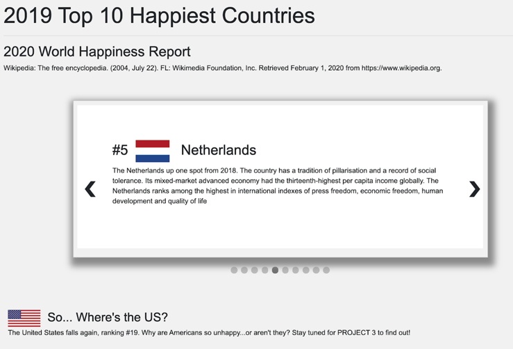
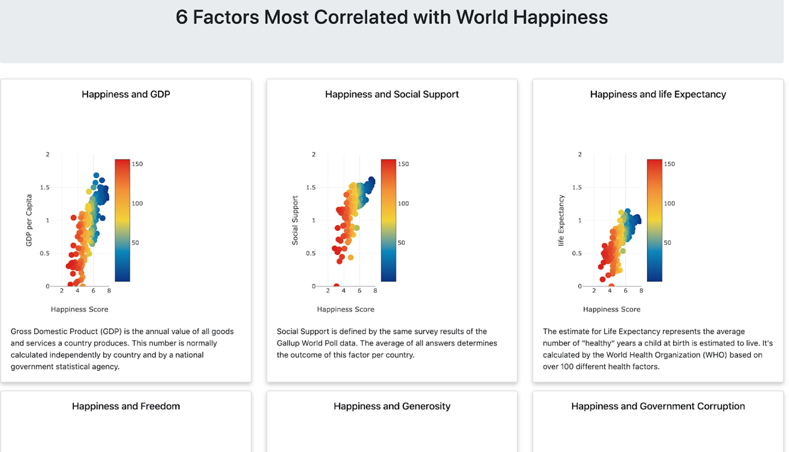

About Us
An in-depth view of our process:
what worked and what didn't
Database and App Summary:
Desiree located the raw data on Kaggle, which consisted of five (5) csv files corresponding to the results of the World Gallup Poll happiness ranking from 2015-2019. She then downloaded the csv files locally and read them into Python to clean the data and to store it into Pandas dataframes for each year. She imported these dataframes as tables into a local SQL. Next, she created an app on Heroku (opposite-of-sadness) and set up a cloud-based Postgres database for it, also on Heroku. After creating the Postgres database, new tables had to be created, matching the tables in the local SQL database. Then, the data were exported from the local database tables and imported into the Heroku Postgres database tables.
Next, she established the file structure for Heroku to launch the app correctly. This consisted of the following files: initdb.py, Procfile, requirements.txt, run.sh, runtime.txt, and __init__.py. After those were created and filed in the correct structure, she created the app.py file. In this file, the Flask app and database were both set up. The database was read in through the operating system environment within Heroku, pointing to the Heroku Postgres database. Then database models were created for each table, displaying each country’s name and their scores in the eight categories. After the database models were created, API calls were created for each Postgres table, and the results were jsonified so that they could be read by the code created for each visualization.
Factors' Impact on Happiness Over Time - Bubble Chart:
Nick started making this visualization by referencing Plotly.D3 documentation to read our CSV data files by year, then creating an array of countries, their life expectancies, GDPs per capita, and Happiness Scores. After creating containers for what will be the bubble sizes and the x and y axes, he called Plotly to assign the read traces into the plotting function. A for loop is used to go through each row, get the right trace, and append the data. He created a single trace here, to which the frames will pass data for the different years. Then he created a frame for each year, which are effectively just traces, except they do not need to contain the full trace definition (for example, appearance). The frames just need the parts of the traces that change (in this case, the data).
Next, he created the slider steps, one for each frame. The slider executes a plotly.js API command (Plotly.animate). He animated to one of the named frames created in the loop made earlier. He used updatemenus to create a play button and a pause button. The play button works by passing ‘null’, which indicates that Plotly should animate all frames. The pause button works by passing ‘[null]’, which interupts any current running animations with a new list of frames. Finally, he added the slider and used ‘pad’ to position it nicely next to the buttons, and then create the plot. From there, the bubble chart plays using our happiness data represented dynamically through the Plotly animation slider, uses color-coding to differentiate between countries, and can be examined closely over the last five years.
Top Ten Happiest Countries - Carousel:
The page was designed using HTML, CSS, and a few lines of Java Script written directly in the HTML file and displays the information on the website as an interactive carousel.
The HTML code organizes the information for the top 10 countries using a slideshow container: an image of the country’s flag, the country’s rank, and a small blurb about the country sourced from Wikipedia report on the 2020 World Happiness Report and searches on the top 10 countries. W3 HTML slideshow tutorial was used to design this slideshow. CSS styling was used to format the content container, controls, and indicators for the slide show. The controls are the navigation arrows (next and prev) used to advance the slides. The indicators are dots at the bottom of the slideshow that indicate where the viewer is in the slide deck. The indicator may also be used to select slides.
The JavaScript code is very minimal but provides the “do something” logic that advances or switches the slide based on the viewers use of the control and indicator arrow/dots to navigate the slides.
A teaser was added at the bottom of the page opening the discussion about America’s ranking and what’s making Americans unhappy - something the team hopes to explore in project 3 using predictive analysis.

Six Factors - Scatter Visualization:
Demetria charted the correlation between the Happiness Score and each of the 6 happiness factors used in the 2019 World Happiness Report.
She read in current year (2019) data file from the postgresql database using flask/sqlalchemy. Next, used the map method to create new arrays for each of the factors, including country and happiness rank.Then, used d3.plotly to create a scatter plot (create 6 plots for each factor) to display the correlation between the happiness score for each country and the factor value for each country. The happiness score determines the position on the horizontal axis. The factor value determines the position on the vertical axis. Plot markers represent the country and are color coded based on the happiness rank for each country. A legend displays the color code for the happiness ranking with the highest rank (darkest color) at the bottom rising to the lowest rank (lightest color) at the top.
The x and y-axis ranges were standardized across the plots to provide a “at a glance” view of how each factor related to the happiness score on the same scale. The default for the ranges was the low and high values of the happiness score and factor value for each factor plot, which “at a glance” skewed the comparative view of the relationships of happiness across plots
Note: javascript plotly does not display the legend the same as the python version of plotly. It does not appear to allow the capability to name legends that are auto-generated from a data series (at least not for the novice). Also, the values displayed in the legend do not correspond to the ranking value, but rather some other generated value based on the rank value… Demetria was not sure what the listed number was. The python plotly version appeared to use the column value from the database in the legend.
To visualize the plots on the website, she used HTML bootstrap layout container and card formatting. Each plot is displayed with a bootstrap card (a styled content container - bordered box with formatting options like header, footer, title, content). The bootstrap layout container was used for margin-setting and wrapping.
